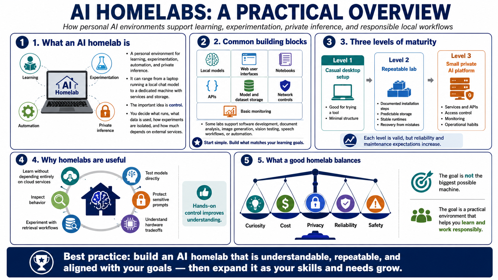

What Is an AI Homelab?
Connecting to LMS... Progress: in progress

Narration
An AI homelab is a personal environment for learning, experimentation, automation, and private inference. It can be as small as a laptop running a local chat model or as structured as a dedicated machine with model services, notebooks, storage, monitoring, and documented workflows. The important idea is control. You decide what runs, what data is used, how experiments are isolated, and how much of the workflow depends on external services.
A typical AI homelab may include local models, web user interfaces, notebooks, APIs, storage for models and datasets, network controls, and basic monitoring. Some labs are built for software development. Others are built for document analysis, image generation, vision testing, speech workflows, or automation. The lab does not need to be elaborate on day one. It needs to be understandable, repeatable, and aligned with what you want to learn.
There is a difference between a casual desktop setup, a repeatable lab, and a small private AI platform. A casual setup is useful for trying a tool. A repeatable lab has documented installation steps, predictable storage, stable runtimes, and a way to recover from mistakes. A small private platform adds services, APIs, access control, monitoring, and operational habits. Each level is valid, but each has different expectations for reliability and maintenance.
Homelabs are useful because they let you learn without depending entirely on cloud services. You can test models, inspect behavior, protect sensitive prompts, experiment with retrieval workflows, and understand hardware tradeoffs directly. The best labs balance curiosity, cost, privacy, reliability, and safety. The goal is not to build the biggest possible machine. The goal is to create a practical environment that helps you learn and work responsibly.